Ordinarily, profile applications in UML models are owned by the packages to which they apply profiles. However, Papyrus provides an extended semantics that externalizes the application of profiles, letting profile applications be defined separately from the packages that apply them. This has a few advantages:
Consider the following small example of a model that has the Ecore profile applied:
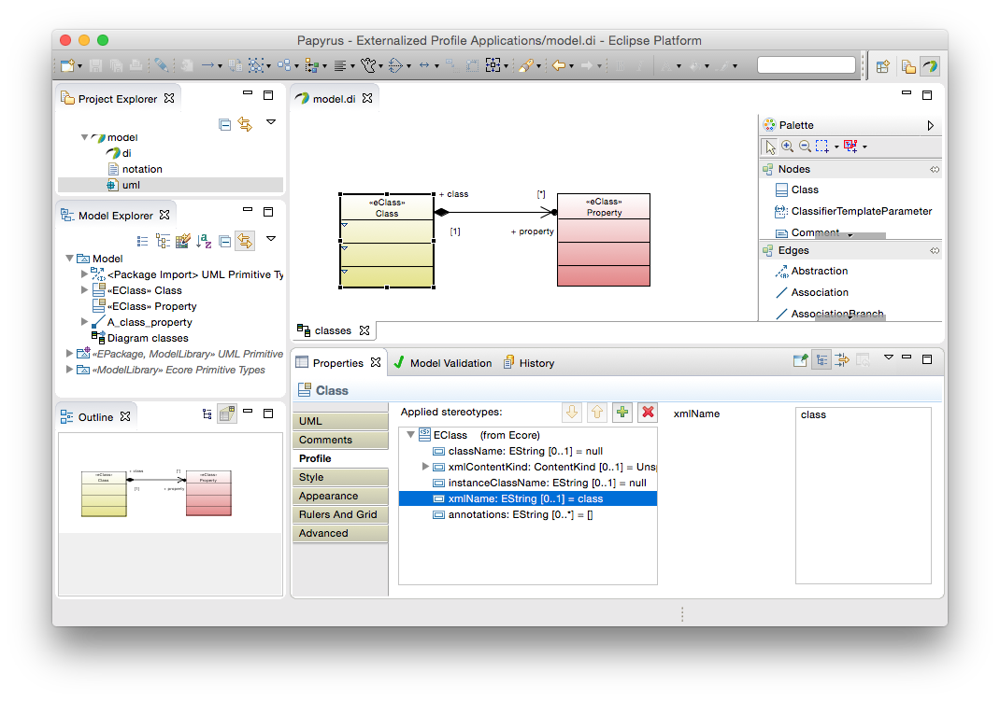
This model has two classes, both stereotyped as «eClass». A CSS stylesheet paints EClasses yellow that specify the xmlName attribute and red that do not. Initially, this profile application is owned by the model. To separate it out into its own resource, invoke the Refactor → Externalize Profile Applications... context menu action on the applying package:
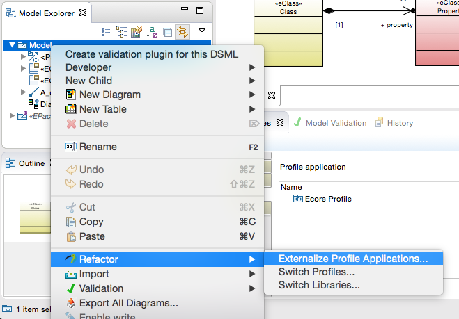
or select the profile application in the applying package's properties and press the externalize action button:
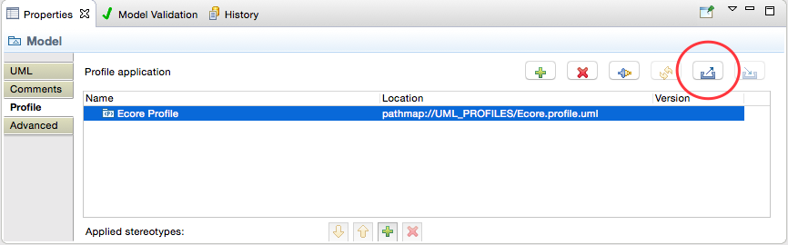
Either way brings up the Externalize Profile Applications dialog:
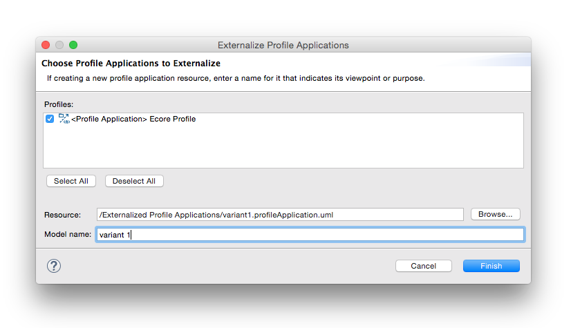
In this dialog, you must:
After completing this dialog, it is recommended to save to create the new profile application model. This is similar to sub-model units, which are created when saving the parent model. The result is something like this:
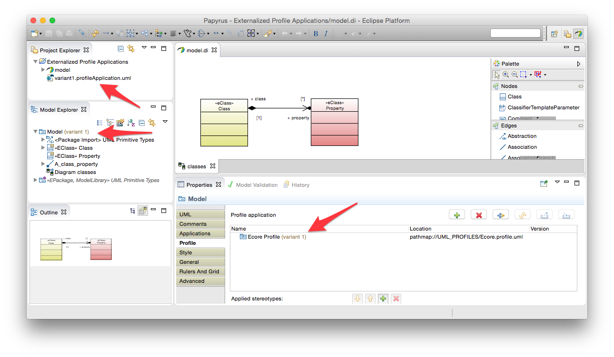
Note the new elements in the user interface, indicated by the arrows in the graphic above:
Moreover, the applying package has a new tab in its property sheet listing available and loaded profile applications. This is discussed further in the next section.
Note that in this example, the profile application model was created in the same project as the model to which it applies profiles. Profile application models may be created in any project in the workspace; they do not have to be in the same project as the models that they extend. Also, a profile application model may contain applications of any number of profiles on any number of packages in any number of models. The only restriction is that a single profile application model may not apply the same profile more than once to the same package. Two or more different profile application models may apply the profile to the same package in a user model, but then only one of them may be loaded at any one time in the context of that package.
Once a profile application has been externalized (see the preceding section), it may be unloaded and loaded again as needed. There are two ways to unload profile applications.
In the Model Explorer, select a package that has profile applications loaded and choose the Unload Profile Applications... action in the context menu:
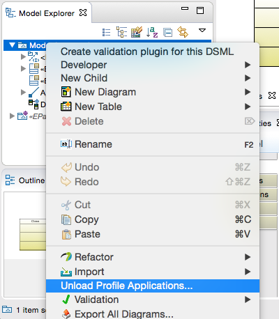
This brings up a dialog that lets you choose which profile application models to unload:
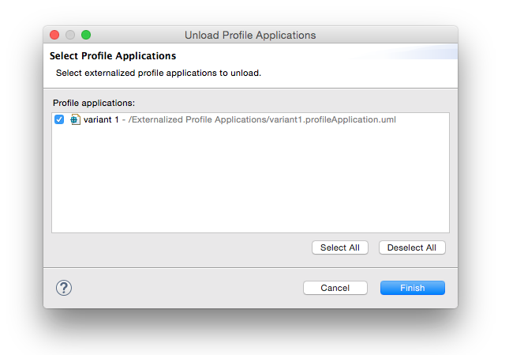
Finish the dialog to unload the selected models.
Alternatively, in the Applications tab of the property sheet for a package that has externalized profile applications, select one or more loaded profile applications and press the unload button to quickly unload them:
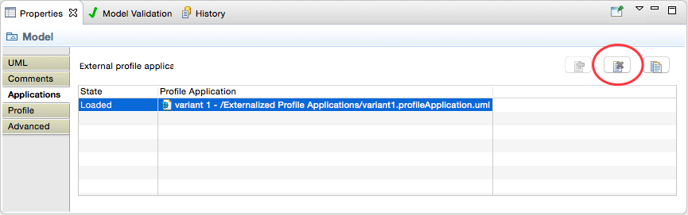
The result on our example Ecore-profiled model is this:
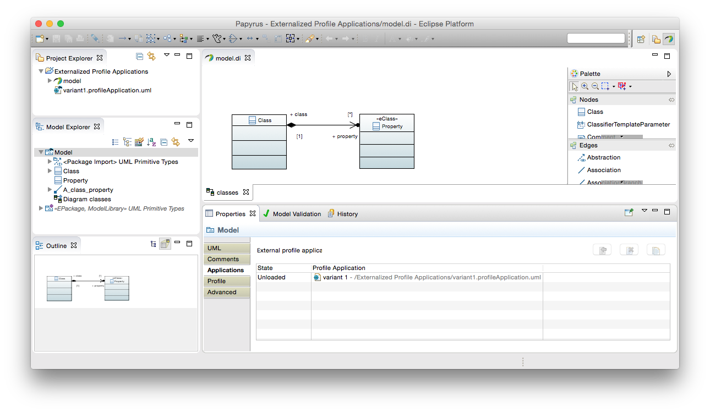
The default styling in the diagram suggests that the «eClass» stereotype applications are now unloaded and the profile application's state in the property sheet is changed to Unloaded. Also, the root package no longer shows the decoration indicating loaded profile applications.
For packages that have available unloaded profile applications, the Model Explorer provides a Load Profile Applications... context menu action:
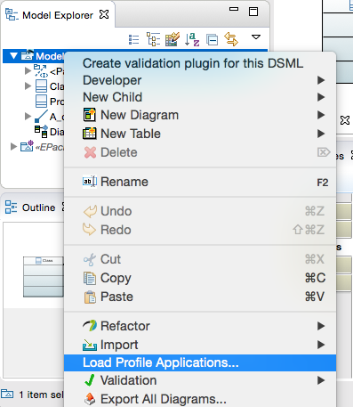
This brings up the Load Profile Applications dialog in which you may select the profile applications to load:
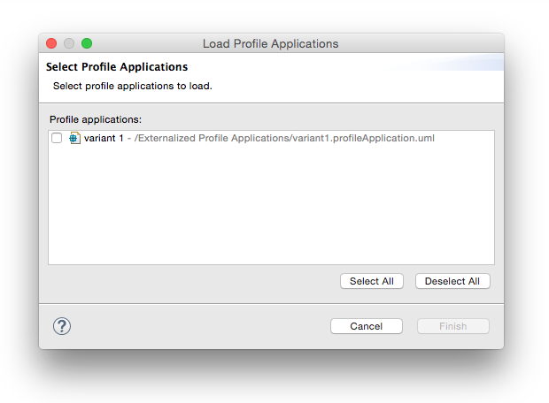
Select the profile applications to load and finish the dialog to load them.
In addition to any profile applications that are already loaded, the Applications tab in the property sheet shows those that are currently available to load:
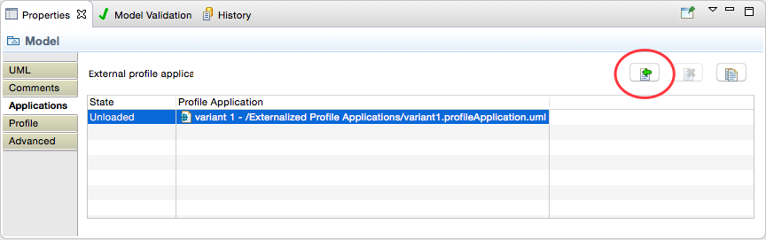
Select one or more unloaded profile applications and press the load action button to load them:
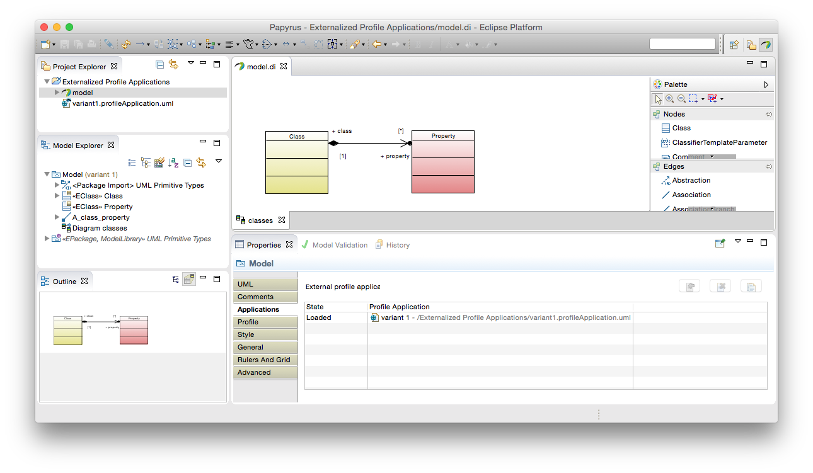
As a quick alternative, you can double-click on an unloaded profile application to load it.
An externalized profile application is defined in a UML package in its own, separate, resource. As such, when it is loaded into the Papyrus editor, it appears in many respects like any other UML package. For convenience, the packages containing profile applications are hidden in the Model Explorer. However, they can be revealed if necessary by disabling the filter in the Customize View... view menu action:
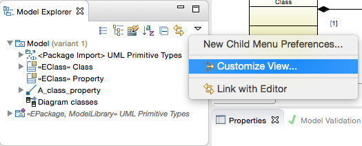
Uncheck the Profile Applications filter and complete the dialog to see the loaded profile application models in the explorer:
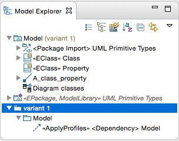
Using externalized profile applications, not only is it possible to apply multiple profiles externally to a package, but the same profile may be applied multiple times to the same package. This facilitates development of alternative extensions of the same model elements, such as for "what if" analysis or other comparisons.
The simplest way to create another application of the same profile is to duplicate an existing one. Simply select a profile application in the property sheet (it may be either loaded or unloaded) and press the duplicate action button:
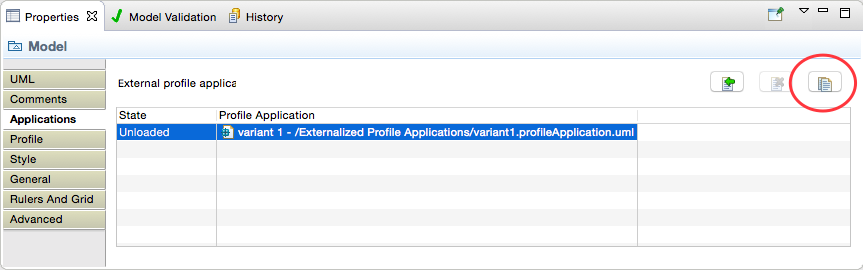
This opens the Duplicate Profile Application dialog in which you select which of the profile applications in the model that you are duplicating you want to copy (you don't have to duplicate all of them) and then specify a new file name and profile-application model name:
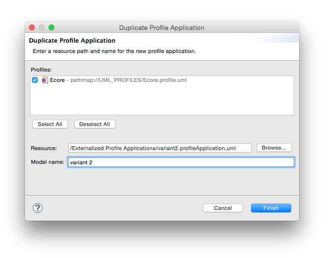
The result looks something like this:
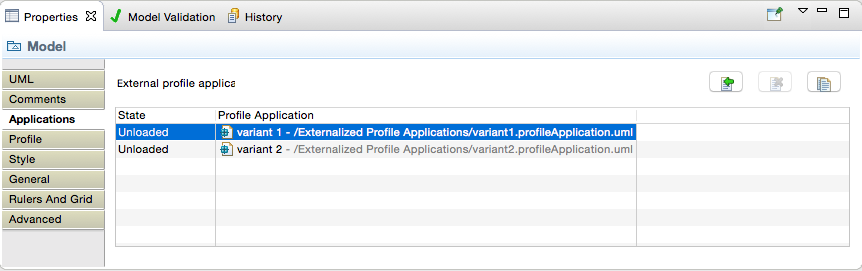
If the original profile application was loaded, then the new duplicate is loaded in its place (because the new profile application applies at least one of the same profiles as the original to the same package, only one can be loaded at a time). Otherwise, you can proceed by opening the new profile application and configuring its stereotype applications differently than in the original:
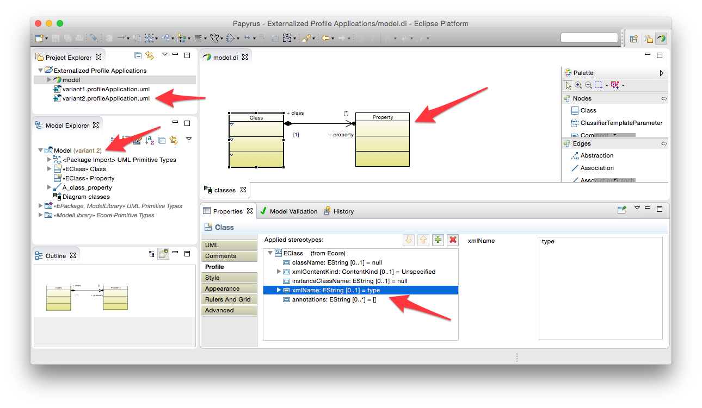
There are certain restrictions in working with multiple profile applications, especially when they concern the same combinations of profiles and applying packages:
Profile application models may be opened in their own editors to provide convenient access to the perspective that they offer on the models that they extend. Ordinarily, they contain only stereotype applications extending elements in the user model, but it may be useful in some circumstances to create diagrams in a profile application model that are specific to the profile applications that it contains. It is highly recommended never to add UML content to a profile application model; only stereotype applications extending UML content.
The New → Papyrus Model wizard may be used to initialize a complete Papyrus model from the UML resource of a profile application:
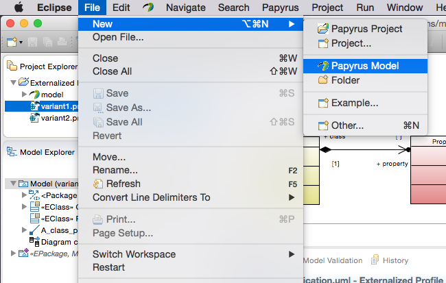
Complete the wizard, creating for example a class diagram, and you can drag and drop elements from the profiled model onto the diagram to visualize them in some way specific to the profile application:
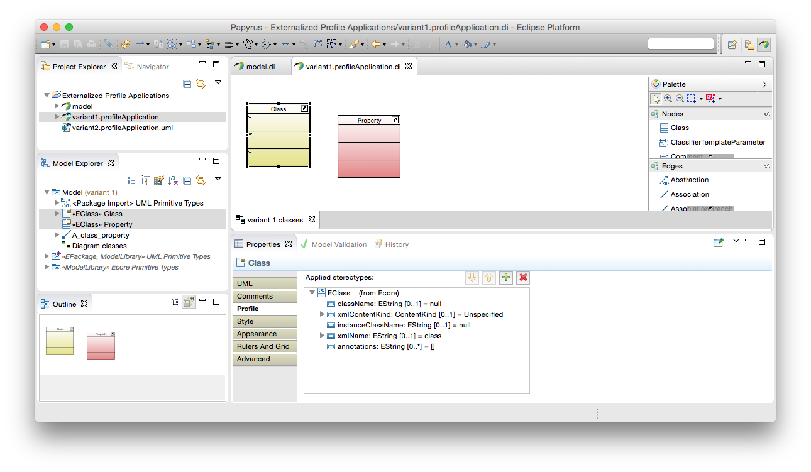
Note that the Model Explorer shows the profile model, not the profile application model itself, simply by virtue of the latter being filtered out of the view by default (see above for details). In this way, various different perspectives on the same user model may be revealed in separate editors through the profile applications. Of course, the same caveats apply for making changes to the same UML content in multiple such editors as would normally apply to editing shared "library" models.
The opposite process to externalizing a profile application is reintegrating it into the model proper. There are two ways to reintegrate a loaded profile application: using the Refactor → Internalize Profile Applications... action in the context menu:
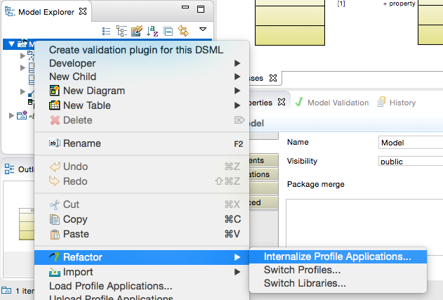
or by selecting one or more profile applications in the property sheet and pressing the internalize action button:
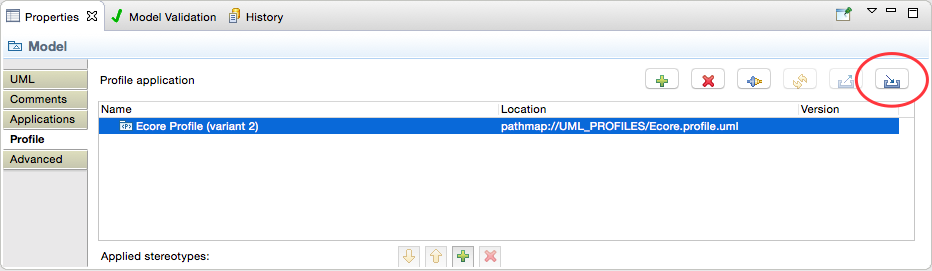
The context menu action opens a dialog in which you may choose which profile applications, for the selected package, that are currently loaded should be reintegrated. Upon saving the model, then, these profile applications and the stereotype applications that they define are stored once more in the same resources as the UML elements that they extend.
A few preference options are available to control how Papyrus behaves in working with externalized profile applications. These are:
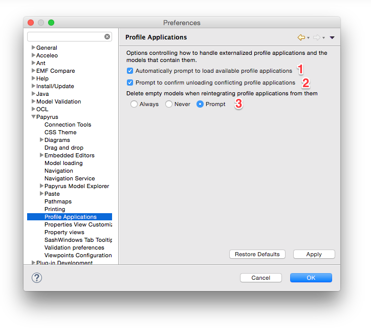